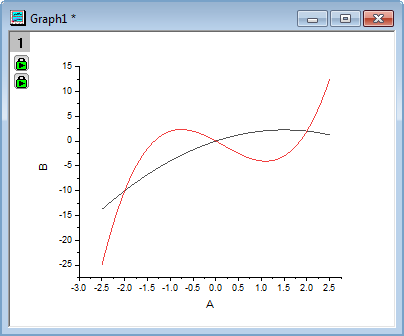
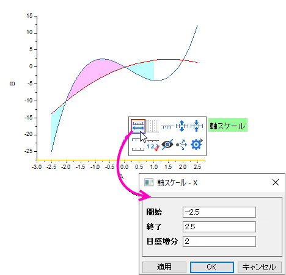

関数曲線間の部分領域を塗りつぶす
fill-partial-area-between-curves
概要
このチュートリアルでは、2つの関数をプロットし、曲線の間の領域を部分的に塗りつぶす方法を示します。

必要なOriginのバージョン: 2017 SR0以降
学習する項目
- 「値の設定」ツールで関数データを作成
- 異なる色で2曲線間を塗りつぶし
- グラフ上にオブジェクトを追加、編集
ステップ
このチュートリアルは、<Origin EXE Folder>\Samples\Tutorial Data.opjというプロジェクトのFill Partial Area between Function Plotsフォルダーを使います。
2つの曲線間の一部領域を塗りつぶす
曲線の2つ以上の部分に異なる塗りつぶしの色を適用するために、曲線をセグメントでプロットする必要があります。このチュートリアルでは、X <= 1の曲線間の領域を塗りつぶす方法を学習します。
- Tutorial Data.opj からFill Partial Area between Function Plotsフォルダを開きます。Book2Lには、2つの関数曲線データが入力されています（Note: 関数からデータセットを生成する方法は、このチュートリアルの後半で示しています）。
- Book2LのSheet1内の3列すべてにおいて、1~36 (-2.5 <= X <= 1) 行目を選択し、作図：Basic 2D：折れ線を選択して2曲線を作図します。2つのデータセット（折れ線）が自動でグループ化されます。
- 次に、ワークシートに戻り、Book2LのSheeet1の36~51 (1 <= X <= 2.5)行目の全ての列を選択し、カーソルが
 のように表示されるようにハイライトした領域の端にマウスカーソルを移動します。選択した範囲を、作成したグラフにドラッグアンドドロップします。再スケールに関して確認メッセージが表示されたら、はいを選択します。
のように表示されるようにハイライトした領域の端にマウスカーソルを移動します。選択した範囲を、作成したグラフにドラッグアンドドロップします。再スケールに関して確認メッセージが表示されたら、はいを選択します。
- 凡例と軸タイトルを選択して削除します。
- 
- 折れ線グラフ上でダブルクリックし、作図の詳細ダイアログボックスを開きます。左パネルでLayer1の1番目のプロットを選択します。
- グラフの線タブに移動し、曲線以下の塗りつぶしの有効にするにチェックをつ付けます。データプロットまで塗りつぶす - 上下色、データプロット = 次のプロット、塗り方 = 共通X面積に設定して適用をクリックします。
この操作でパターン_上部、パターン_下部タブがダイアログに追加されます。
- 左のパネルで3番目のプロットを選択して、グループタブで詳細列の線のカラーリストをクリックして、以下のように、推移リストCandyを選択します。
- パターン-上部タブを開き、黒い折れ線の上部領域の塗りつぶし色を薄い深紅色にし、透過率を50%に設定します。
- パターン-下部タブを開き、黒い折れ線の下部領域の塗りつぶし色を薄い空色にします。パターン_下部の透過率の設定は自動になっているので、パターン_上部での透過率の設定に従います。
- 左のパネルで3番目のプロットを選択して、グループタブで詳細列の線のカラーリストをクリックして、以下のように、推移リストQ11 Candyを選択します。

- OKをクリックしてダイアログを閉じます。X <= 1の曲線間の領域が塗りつぶされます。

 | 作図の詳細のグラフの線タブコントロールの代わりに、Ctrlキーを使用してグラフレイヤ内の任意の2つのプロットを選択し、ミニツールバーボタンを使用して選択した曲線の間に塗りつぶしを適用することもできます。

|
軸範囲の変更
- XとY軸の表示範囲を変更します。X 軸でクリックして、ミニツールバーを開き、軸スケールボタンをクリックしてダイアログを開きます。表示範囲を-2.5から2.5にし、目盛増分を2 にします。
- 
- Y 軸も同じように操作し、表示範囲を-10.5から4、目盛増分を4 に設定します。
- X軸とY軸が0,0で交差するように構成します。X 軸をダブルクリックして、軸ダイアログを開き、軸と軸目盛タブを開きます。軸ダイアログの左パネルで下軸と左軸を両方選択します。軸位置を位置 = 0に設定します。
- OKをクリックして、ダイアログを閉じます。軸のタイトルを削除して、2つの線グループをそれぞれ選択して、スタイルツールバーを使って幅を2に選択します。グラフは、次のようになります。

特別なポイントを追加して交点に脚注を付ける
上のグラフには、2つの関数曲線の3つの交点があります。そのうちX=-2とX=2の2点に、それぞれ印を付ける場合には以下のように操作します。
- CTRLキーを押しながらX=-2の交点をクリックして1つののポイントを選択してから、右クリックで編集ポイントを選択し、作図の詳細ダイアログを開きます。グラフ上の個々のポイントを表示・編集する方法についての詳細もご参考にしてください。
- 開いたダイアログで、行インデックスが表示された特別なポイントが追加されて、2番目のプロットで選択されています。
- シンボルタブで、以下のようにスタイルをカスタマイズします。
- ドロップラインタブで、垂直ドロップラインを有効にして、 以下のようにスタイルを設定します。
- ラベルタブで、「有効にする」チェックを付けてから、ラベル形式を(X,Y)に、フォントサイズを22に設定します。
- OKボタンをクリックして、ダイアログを閉じます。手順1と同様にして、X=2（行インデックス=46）で別の交点追加します。
次に、同じスタイルに設定します。以下のようなグラフが作成できます。

関数式と軸を追加
- (0,0)交点の目盛ラベルを非表示にするには、軸ダイアログを再び開き、特別な軸刻みタブを開きます。左側パネルの下アイコンで図のように設定します。同じように左アイコンも選択して設定します。
- 軸の終端に矢印を追加します。軸ダイアログで軸と軸目盛タブを開きます。軸ダイアログの左側のパネルで軸ダイアログの下と左のアイコンを選択します。矢印を伸ばし、終点の矢印をにチェックを付け、幅を5に設定します。
- X軸をダブルクリックして、軸ダイアログを開きます。参照線タブで、値の参照線のテキストボックスで1を入力してから、参照線をリスト表のどこかをクリックして、X=1の参照線を追加します。以下のように設定します。
詳細ボタンをクリックして線のスタイルを設定します。
OKをクリックしてこのダイアログを閉じて、OKボタンをクリックして軸ダイアログも閉じます。
| 直線を追加ツール（メニューのグラフ操作: 直線を追加から開きます。）を使って、X=1で垂直線を追加します。
|
- グラフに2曲線の式を追加するために、何もない領域で右クリックしてテキストの追加...を選択します。まず、オブジェクトに何か文字を入力して、テキストオブジェクトを作成します。次に、その上で右クリックして開くコンテキストメニューから、オブジェクトプロパティを選択して、テキストオブジェクトダイアログを開きます。テキストタブで最初の式を入力します。
y=-x\+(2)+3x y=2x\+(3)-x\+(2)-5x
- OKボタンをクリックしてダイアログを閉じます。テキストオブジェクトをもう一つ追加してテキストプロパティダイアログをもう一度開いてから、テキストタブで上の二番目の式を入力します。OKボタンをもう一度クリックして、これらの3つの式をグラフウィンドウにも追加します。必要があれば、位置を変更します。
- 曲線矢印ツールを選択して、式ラベルと折れ線をつなぐ曲線矢印を2つ追加します。
- 最終的なグラフは次のようになります。

「値の設定」ツールで関数データを作成
- 新規ワークブックを作成します。右クリックして新しい列の追加を選択して3列にします。
- A列を右クリックし、列値の一律設定：数字のセットを選択します。
- patternN ダイアログで、以下のようにパラメータを設定します。
- Col(B)のF(x)ラベル行をダブルクリックして、「直接編集モード」にし、以下のように-1*A^2+3*Aを入力します。
| Note: Origin 2017から新しいスプレッドシートセル表記が追加され、デフォルトで有効になっています。列のショートネームの使用が可能で、col(A)+1の代わりにA+1 のように表記できます。
以前のバージョンでは、-1*col(A)^2+3*col(A)というように入力します。
|
- 列Cを選択し、右クリックして開くコンテキストメニューから列値の設定を選択し、値の設定ダイアログを開きます。このダイアログに、以下のように計算式と範囲を入力します。